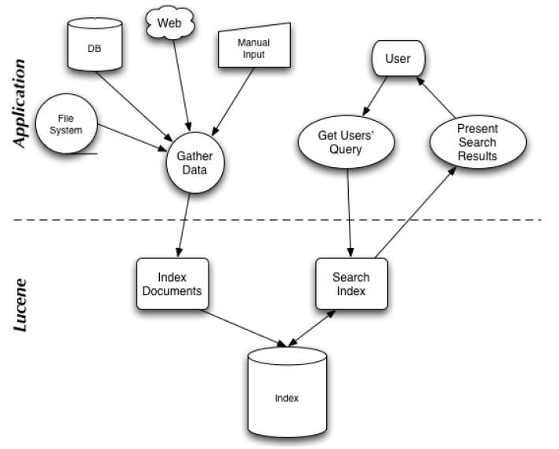
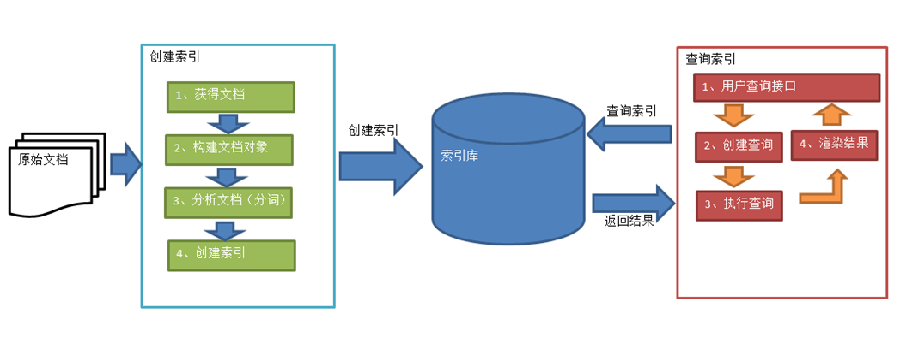
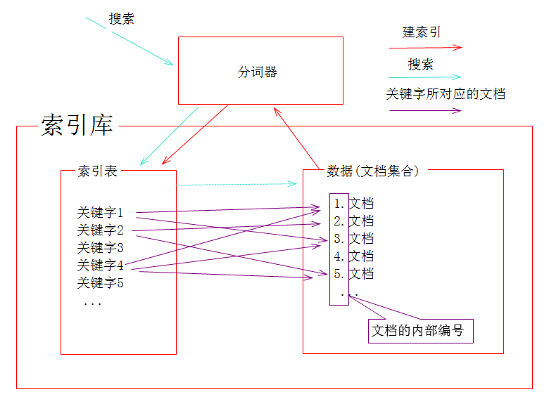
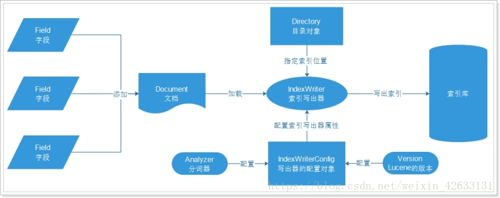
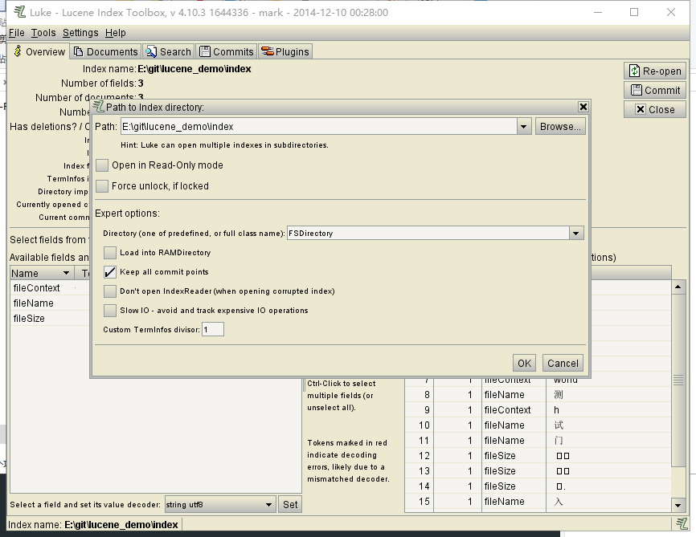
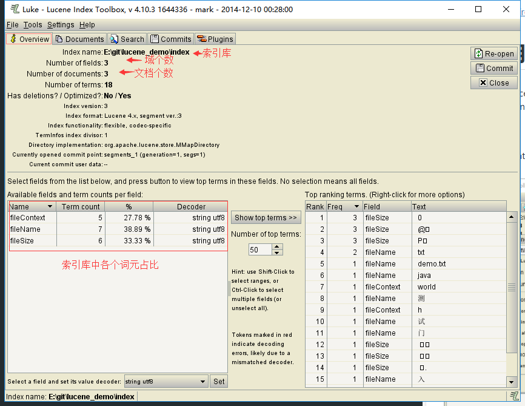
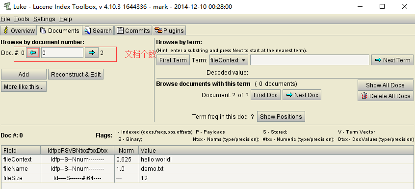
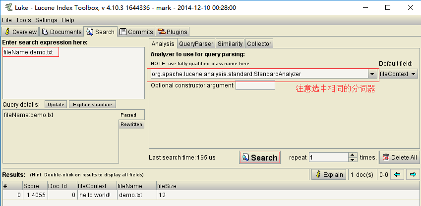

lucene介绍
背景
生活中的数据总体分为两种类型
- 结构化数据：指具有固定格式或有限长度的数据（数据库表中的数据）
- 非结构化数据：指不定长或无固定格式的数据 （如邮件，word文档等磁盘上的文件）
结构化数据的查询方法：
- sql语句
非结构化数据的查询方法：
- 顺序扫描法(Serial Scanning)：顺序扫描所有文件，速度慢
- 全文检索(Full-text Search)：非结构化数据中的一部分信息提取出来，重新组织为索引，这种先建立索引，再对索引进行搜索的过程就叫全文检索
Lucene是apache下的一个开源的全文检索引擎工具包,但它不是一个完整的全文检索引擎，而是一个全文检索引擎的架构，提供了完整的查询引擎和索引引擎;
Lucene 的目的是为软件开发人员提供一个简单易用的工具包，以方便的在目标系统中实现全文检索的功能，或者是以此为基础建立起完整的全文检索引擎。Lucene 是一套用于全文检索和搜寻的开源程式库，由 Apache 软件基金会支持和提供。
全文检索的一般过程

lucene包含两部分：建立索引和搜索服务。建立索引是将源（本质是字符串）写入索引或者将源从索引中删除；进行搜索是向用户提供全文搜索服务，用户可以通过关键词定位源。
建立索引的流程
使用analyzer处理源字符串，包括：分词，即分成一个个单词；去除stopword（可选）。
将源中的有效信息以不同Field的形式加入Document中，并把Document加入索引，从而在索引中记录有效的Field。
将索引写入存储器（内存或磁盘）。检索的流程
用户提供搜索关键词，经过analyzer处理。
对处理后的关键词搜索索引找出对应的Document。
用户根据需要从找到的Document中提取需要的Field。

1、绿色表示索引过程，对要搜索的原始内容进行索引构建一个索引库，索引过程包括：
确定原始内容即要搜索的内容→采集文档→创建文档→分析文档→索引文档
2、红色表示搜索过程，从索引库中搜索内容，搜索过程包括：
用户通过搜索界面→创建查询→执行搜索，从索引库搜索→渲染搜索结果
索引文件结构

基本概念
Analyzer
Analyzer的作用是分词，并去除字符串中的无效词语。
分词的目的是把字符串按某种语义规则划分为若干个词。英文中比较容易实现分词，因为英文本身就是以单词为单位，已经用空格分开；而中文则必须以某种方法将连成一片的句子划分成一个个词。 无效词语，如英文中的“of”、“the”和中文中的“的”、“地”等，这些词语在文章中大量出现。但是本身不包含关键信息，去掉后有利于缩小索引文件、提高命中率和执行效率。Document
用户提供的源可以是文本文件、字符串或者数据库表中的一条记录等。一个源字符串经过索引之后，以一个Document的形式存储在索引文件中。搜索服务的结果也是以Document列表的形式返回。
Field
一个Document可以包含多个信息域，如一篇文章可以包含“标题”、“正文”、“最后修改时间”等信息域，这些信息域以Field的形式保存在Document中。
Field有两个属性：存储和索引。存储属性可以控制是否对这个Field进行存储；索引属性可以控制是否对该Field进行索引。这似乎多此一举，但事实上对这两个属性的正确组合很重要。
什么样的内容需要被存储：查询时需要被显示的内容都需要被存储；
什么样的内容需要被分词：要被搜索的列
什么样的内容需要分词：要被搜索的列
DoubleField、FloatField、IntField、LongField、StringField、TextField这些子类一定会被创建索引，但是不会被分词，而且不一定会被存储到文档列表。要通过构造函数中的参数Store来指定：如果Store.YES代表存储，Store.NO代表不存储
TextField即创建索引，又会被分词。StringField会创建索引，但是不会被分词segment
建立索引时，并不是每个document都马上添加到同一个索引文件，它们首先被写入到不同的小文件，然后再合并成一个大索引文件，每个小文件都是一个segment。Term
Term表示文档的一个词，是搜索的最小单位。term由两部分组成：所表示的词语和这个词语所出现的field。
创建索引流程

案例：将文件夹testFile中的文件放入lucene索引库index中
1 |
|
查询索引
建立索引和进行检索时都要用到分词器。为了保证能正确的检索到结果，在建立索引与进行检索时使用的分词器应是同一个。
案例：使用Term词在索引库中查询对应的文档（注意指定域）
1 |
|
完整测试代码地址：
https://github.com/renrr/lucene_demo
luke使用
luke是用于查看lucene中索引文件的工具，注意luke与lucene的版本对应关系（GitHub中luke项目声明了支持的lucene版本）
目前只支持windows
启动方式：
执行部署包中start.bat文件，或者命令行执行java -jar luke-xx.jar
打开索引库文件位置：


查看文档内容

通过搜索关键字查找文档
域对象:关键字搜索
